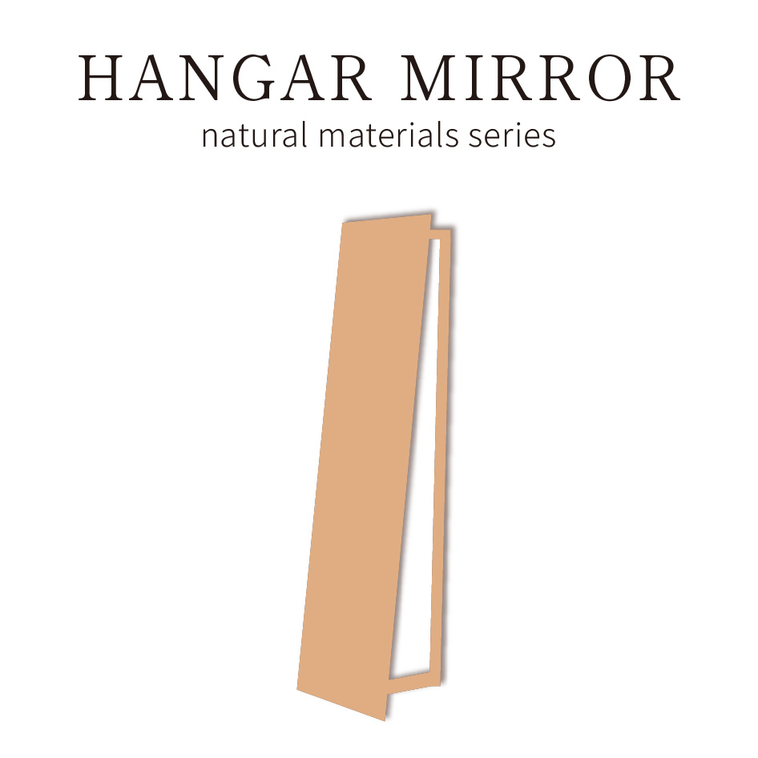
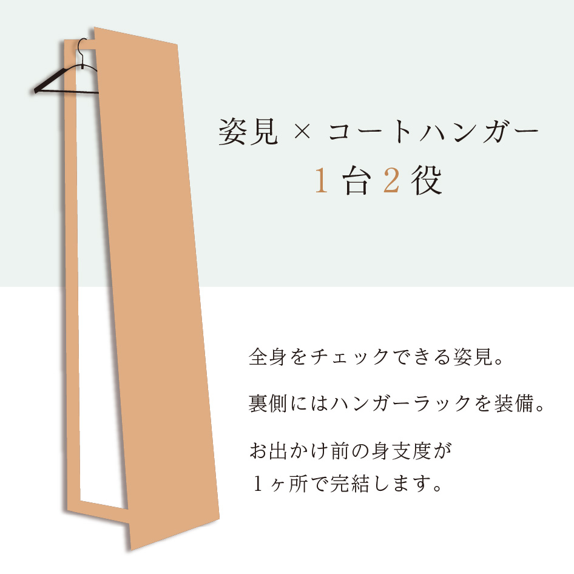
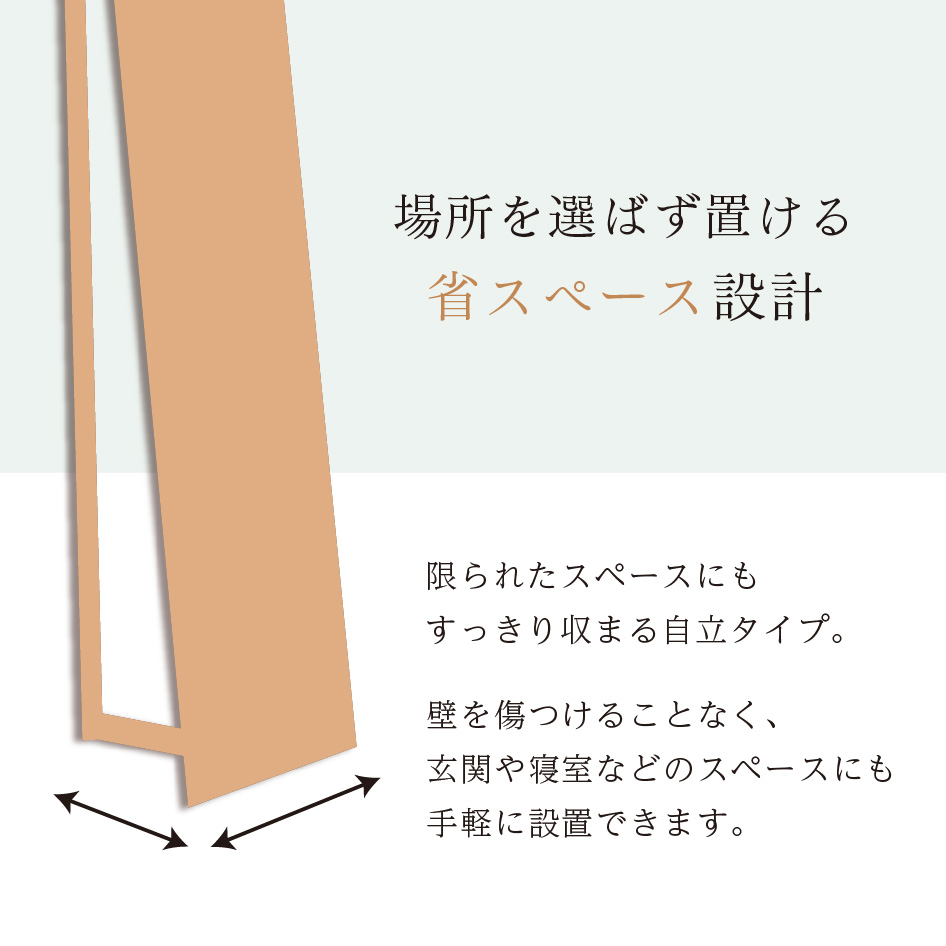
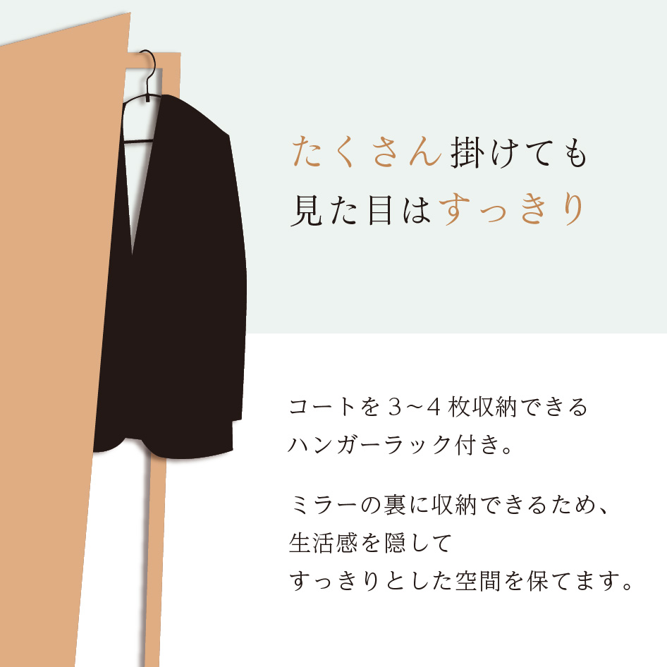
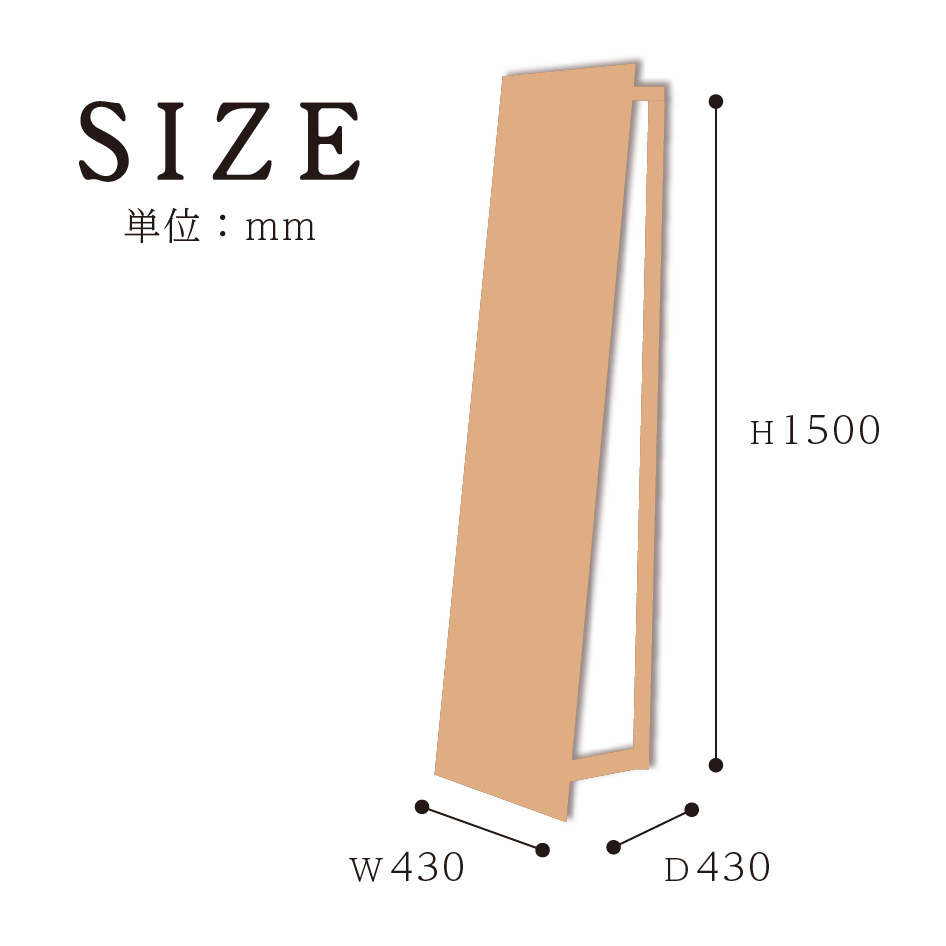

実務で制作した商品ページを、ポートフォリオ掲載用にブラッシュアップしました。
30〜40代の男女をターゲットに、ナチュラルで温かみのある国産家具ブランドの世界観を表現しながら、商品の魅力が伝わる情報設計と視認性を重視したデザインへ改善しています。

お出かけ前の身支度を、この一台に。
場所を選ばず置けるスリムな自立式。




| HANGAR&MIRROR | |
|---|---|
| サイズ | W430×D430×H1500mm |
| 重量 | 2.5kg |
| 主材 | 天然木 |
| 特徴 |
姿見とコートハンガーを一体化した、省スペースで使える収納ミラー。 自立タイプなので壁を傷つけることなく、玄関や寝室などお好みの場所へ手軽に設置できます。 コートを約3〜4枚掛けられる収納力があり、衣類をミラーの裏に隠してすっきりとした空間を保ちます。 |
| ご注意事項 | 商品ページ内の写真に写っている小物は商品には含まれません |
お出かけ前の身支度を、この一台に。
場所を選ばず置けるスリムな自立式。
| サイズ | W430×D430×H1500mm |
|---|---|
| 重量 | 2.5kg |
| 主材 | 天然木 |
| 特徴 |
姿見とコートハンガーを一体化した、省スペースで使える収納ミラー。 自立タイプなので壁を傷つけることなく、玄関や寝室などお好みの場所へ手軽に設置できます。 コートを約3〜4枚掛けられる収納力があり、衣類をミラーの裏に隠してすっきりとした空間を保ちます。 |
| ご注意事項 | 商品ページ内の写真に写っている小物は商品には含まれません。 |